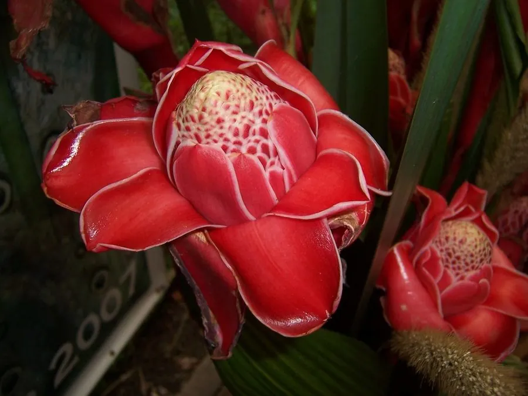

花卉与草本 · 植物界
瓷玫瑰 Etlingera elatior

姜科火炬姜属多年生草本，花序如层层叠叠的瓷质玫瑰，粉红至深红，是热带切花与园林中的高档观花植物。
- 分类
- 门被子植物门纲木兰纲目姜目科姜科属火炬姜属
- 栖息环境
- 东南亚热带雨林林下与溪边，喜高温高湿、半阴环境
- 地理分布
- 原产印度尼西亚、马来西亚；中国华南、云南南部引种栽培
- 保护级别
- IUCN 暂无评估；野生种群受雨林砍伐影响，栽培较广
物种志
瓷玫瑰为多年生丛生草本，高 2–4 米，具粗壮根状茎，假茎由叶鞘包裹。叶片大，长披针形，长 1–1.5 米，两面光滑。花序生于根状茎上、贴近地面，头状，直径 15–20 厘米，苞片粉红色至深红色，表面具蜡质光泽，层层叠叠如瓷质玫瑰；真正的花小，黄色，藏于苞片间。
本种原产印度尼西亚、马来西亚等东南亚热带地区，喜高温高湿、半阴的环境，在中国华南、云南南部常作庭园观花与切花栽培。它花序硕大、苞片具蜡质光泽，像一朵用瓷器雕成的玫瑰，因此得名“瓷玫瑰”；又因形似火炬，也称“火炬姜”。瓷玫瑰不耐寒，北方需温室栽培；花期长，切花插瓶可保持两周以上，是高档花艺的常用材料。
形态与习性
- 株高2–4 米，丛生，假茎粗壮
- 花期5–10 月，花序粉红至深红
- 花序直径 15–20 厘米，蜡质如瓷
- 光照喜半阴，忌强光暴晒
- 水分喜高湿，需充足浇水与喷雾
- 土壤深厚肥沃、排水良好的壤土
- 主要用途高档切花、庭园观赏与热带景观
趣味知识
- 瓷玫瑰的苞片表面有蜡质光泽，摸上去像瓷器一样光滑，因此得名。
- 它原产东南亚，是姜科中花序最华丽的种类之一。
- 瓷玫瑰的花序贴地而生，从根状茎上直接抽出，而不是长在枝顶。
- 它的切花插瓶可保持两周以上，是婚礼与高端花艺的常用花材。